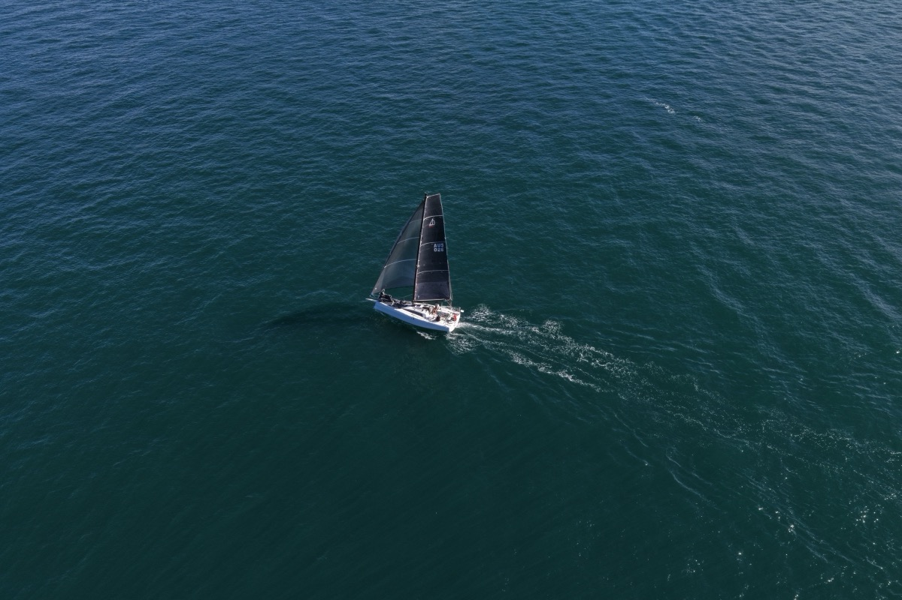

I get this question more than any other: "What's the giant colourful sail at the front?" The answer depends on which one you're looking at, because that giant colourful sail isn't one sail - it's a family of them, each with a different job. Get them mixed up and you're either over-powered, under-powered, or pointing the wrong way.
Here's the short version. Downwind sails come in three main flavours: symmetric spinnakers, asymmetric spinnakers, and code zeros. Same vague shape, very different sails.
1. The symmetric spinnaker
This is the classic - the big balloon-shaped sail you see on traditional offshore boats running dead downwind. It's symmetric because the left side mirrors the right side: same shape, same dimensions, same cloth. It's flown from a pole that pushes one corner of the sail out to windward, so the wind can blow into it square-on.
Symmetrics are brilliant in their sweet spot - true wind angle of about 150° to 180°, which is to say, the wind right behind you. They project a huge amount of sail area away from the boat and pull you downwind like a parachute that's decided it wants to go somewhere.
The cost is operational complexity. You need a pole, you need to gybe the pole every time you change direction, and short-handed (it's just two of us on Alliance) that's a process. Worth it on the right angle; an enormous faff at the wrong one.
2. The asymmetric spinnaker
The asymmetric is what most modern boats - including the Dehler 30 OD I sail - use as their primary downwind weapon. It looks like a spinnaker but it's cut more like a huge, distended jib. The two sides are not symmetric: there's a luff (the leading edge) and a leech (the trailing edge), just like a normal headsail.
It flies from a fixed point on the bow (or a retractable bowsprit), no pole required. You tack the sail down at the bow and trim it like a giant genoa.
The trade-off is that you can't run as deep. An asymmetric wants the wind on the side of the boat, somewhere between 90° and 150° true. To get from A to B downwind, you sail a series of hot reaches and gybe between them - slightly more distance covered, but a lot more speed. Net result: usually faster overall, and a hundred times easier for a short-handed crew.
3. The code zero
The code zero is the odd one out. It's technically classified as a spinnaker in most rating systems (a delightful piece of rule-bending) but it functions like a very large, very flat genoa. Where the other two are designed for the wind behind you, a code zero is designed for the wind just forward of the beam - close reaching in light air, where a normal genoa would be too small but a spinnaker would collapse.
It's the sail you pull out when the breeze dies and you're trying to keep moving. Flat-cut, often on a furler, deployed and stowed without leaving the cockpit. Beautiful in the right conditions, useless in the wrong ones.
So which one do I use on Alliance?

The Dehler 30 OD is designed for short-handed offshore racing, and that design philosophy makes the choice for us. We carry an asymmetric (our workhorse) and a code zero (for the light stuff). No pole, no symmetric. Two people on a boat in 25 knots at 2am can't be wrestling a pole around the foredeck - the whole rig is built around sails that one person can hoist, gybe and drop without leaving the cockpit.
That's what "double-handed friendly" actually means in practice. Not less ambition. Just less to go wrong at 2am.
Quick reference
- Symmetric - runs deepest (150°–180°). Needs a pole. Maximum sail area. Maximum process.
- Asymmetric - broad reaching to deep (90°–150°). No pole. Short-handed friendly.
- Code zero - close reaching in light air (60°–90°). Flat cut. Lives on a furler.
- Rule of thumb - if you can feel the wind on your face, you're code-zero territory. If it's on the back of your neck, you're spinnaker territory.
When things go wrong
Spinnakers are the most powerful and the most dramatic sails on the boat. When they go right, they're exhilarating. When they go wrong, they go wrong fast. Knowing what can happen - and how to respond - is as important as knowing how to fly them in the first place.
The broach. This is the big one. A broach happens when the spinnaker overpowers the rudder and the boat rounds up violently into the wind, heeling hard onto its side. It usually happens in gusts, especially when the helmsperson is slow to bear away or the sheet isn't eased quickly enough. The boat suddenly swings broadside to the wind, heels to an alarming angle, and the spinnaker flogs violently overhead. The fix is prevention: ease the sheet in gusts before they overpower you, bear away early, and keep the boat as flat as possible. If you do broach, release the sheet completely - let it run - and the boat will come back upright.
The wrap. A spinnaker wrap happens when the sail twists around the forestay or around itself, usually during a gybe or in a lull when the sail collapses and then refills twisted. It turns your spinnaker into a tight, useless spiral that you can't hoist or drop. On a double-handed boat, this is a serious problem because you may not be able to send someone safely to the bow to unwrap it in heavy conditions. Prevention: keep the sail full during manoeuvres and don't let it collapse. If it does wrap, try sailing deeper to unload the pressure, then slowly unwind it by sheeting from alternating sides.
The blowout. High loads and ageing cloth eventually meet, and the sail tears. It usually goes along a seam or at a stress point like the clew or tack. If a spinnaker starts to rip, drop it immediately - the tear will only get bigger under load. We carry a basic sail repair kit on Alliance (sticky-back Dacron tape) that can get a torn sail back in service for light conditions, but anything structural needs a sailmaker.
One last thing
The reason these sails exist at all is the same reason engines do: the wind isn't always behind you. Boats are remarkably efficient at converting wind into forward motion, but only if you give them the right sail for the angle. A mainsail and a jib will get you upwind beautifully. The moment you bear away past about 90°, those same sails start collapsing and losing power. That's the gap a spinnaker fills - capturing the wind from behind and turning it into speed.
Start by understanding which sail does what (you've just done that). Then learn when to change between them - that comes with time on the water. And when something goes wrong, remember: ease the sheet first, ask questions later. That single instinct will get you out of most spinnaker trouble before it becomes spinnaker drama.